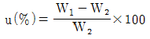
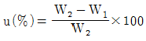
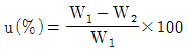
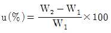
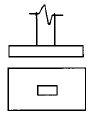

건설재료시험기능사 (2004-04-04 기출문제)
1과목: 건설재료
1. 목재의 함수율을 구하는 식으로 옳은 것은? (단, u:함수율, W1:건조전 중량, W2:절대건조후 중량)




(정답률: 63%)

2. 재료가 외력을 받을때 조금만 변형되어도 파괴되는 성질은 무엇이라 하는가?
- 취성
- 연성
- 전성
- 인성
(정답률: 86%)
3. 다음중 도로포장용으로 가장 많이 사용되는 재료는?
- 콜타르
- 스트레이트 아스팔트
- 블로운 아스팔트
- 샌드매스틱
(정답률: 79%)
4. 다음 합성수지 중 열가소성 수지가 아닌 것은?
- 페놀수지
- 염화비닐수지
- 아크릴수지
- 폴리에틸렌수지
(정답률: 50%)
5. 대폭파 또는 수중폭파를 동시에 실시하기 위하여 사용되는 기폭 용품은?
- 도폭선
- 도화선
- 전기뇌관
- 공업뇌관
(정답률: 65%)
6. 굵은 골재의 최대치수는 무게로 몇 %이상을 통과시키는체 가운데에서 가장 작은 치수의 체눈을 체의 호칭 치수로 나타낸 것인가?
- 80%
- 85%
- 95%
- 90%
(정답률: 83%)
7. 포오틀랜드 시멘트를 만들 때 응결 지연제로 사용하는 것은?
- 규사
- 광재
- 실리카
- 석고
(정답률: 65%)
8. 콘크리트의 크리프(creep)에 대한 설명으로 틀린 것은?
- 콘크리트의 재령이 짧을수록 크게 일어난다.
- 부재의 치수가 작을수록 크게 일어난다.
- 물-시멘트비가 작을수록 크게 일어난다.
- 작용하는 응력이 클수록 크게 일어난다.
(정답률: 60%)
9. 폭약을 다룰때 주의할 사항으로 틀린 것은?
- 뇌관과 폭약은 같은 장소에 저장한다.
- 운반중에 충격을 주어서는 안된다.
- 다이너마이트는 햇볕을 직접 쬐지 않고 화기가 있는 곳에 두지 않는다.
- 흡습 동결되지 않도록 하고 온도와 습기에 품질이 변하지 않도록 한다.
(정답률: 94%)
10. 댐과 같은 단면이 큰 구조물을 만들려고 할 때 사용되는 시멘트의 선택으로 적당한 것은?
- 조강 포틀랜드 시멘트
- 중용열 포틀랜드 시멘트
- 내황산염 포틀랜드 시멘트
- 보통 포틀랜드 시멘트
(정답률: 75%)
11. 시멘트가 응결할 때 화학적 반응에 의하여 수소 가스를 발생시켜, 콘크리트 속에 아주 작은 기포가 생기게 하는 혼화제는 어느 것인가?
- 발포제
- 방수제
- AE제
- 감수제
(정답률: 78%)
12. 콘크리트는 인장강도가 작으므로 콘크리트 속에 미리 강재를 긴장시켜 콘크리트에 압축 응력을 주어 하중으로 생기는 인장 응력을 비기게 하거나 줄이도록 만든 콘크리트는?
- 프리스트레스트 콘크리트
- 레디믹스트 콘크리트
- 섬유 보강 콘크리트
- 폴리머 시멘트 콘크리트
(정답률: 75%)
13. 석회암이 지열을 받아 변성된 석재로 주성분이 탄산칼슘인 석재는?
- 화강암
- 응회암
- 대리석
- 점판암
(정답률: 72%)
14. 스트레이트 아스팔트에 천연 고무, 합성 고무 등을 넣어서 성질을 좋게 한 아스팔트는?
- 유화 아스팔트
- 컷백 아스팔트
- 고무화 아스팔트
- 플라스틱 아스팔트
(정답률: 72%)
15. 다음 중에서 혼화제에 속하지 않는 것은?
- 급결제
- 발포제
- AE제
- 포촐라나
(정답률: 77%)
16. 수축한계를 결정하기 위한 수축접시 1개를 만드는 시료의량으로 적당한 것은?
- 15g
- 30g
- 50g
- 150g
(정답률: 62%)
17. 길이 ℓ=10cm, 폭 b=5cm인 강봉을 인장시켰더니 길이가 11.5cm이고, 폭은 4.8cm가 되었다. 포화송비는?
- 0.27
- 0.35
- 11.50
- 0.96
(정답률: 39%)
18. 유동곡선에서 타격회수 몇 회에 해당하는 함수비를 액성한계로 하는가?
- 10회
- 15회
- 20회
- 25회
(정답률: 88%)
19. 소성한계란 흙을 국수모양으로 밀어 지름이 약 얼마 굵기에서 부스러질 때의 함수비를 말하는가?
- 3㎜
- 5㎜
- 7㎜
- 10㎜
(정답률: 87%)
20. 토질조사에서 실내 시험 중 역학시험에 해당하지 않는 것은?
- C.B.R.시험
- 일축압축시험
- 소성한계시험
- 압밀시험
(정답률: 26%)
2과목: 건설재료시험
21. 완성된 구조물의 콘크리트 강도를 알고자 할 때 쓰이는 방법은?
- 리몰딩시험
- 이리바렌시험
- 표면경도방법
- 다짐계수시험
(정답률: 39%)
22. 콘크리트의 압축강도시험에서 공시체의 제작이 끝나 모울드를 떼어 낸후 습윤 양생을 한다. 이때 적당한 수온은?
- 8∼12℃
- 12∼16℃
- 17∼23℃
- 26∼30℃
(정답률: 63%)
23. 굳지 않은 콘크리트를 흐름 시험하여 콘크리트의 퍼진 지름을 측정한 결과 60.5cm, 58.2cm, 59.5cm 였다면 콘크리트의 흐름 값은? (단, 콘의 밑지름은 25.4cm 이다)
- 159%
- 134%
- 119%
- 114%
(정답률: 28%)
24. 다음 중 슬럼프 시험의 목적은?
- 콘크리트 내구성 측정
- 콘크리트 수밀성 측정
- 콘크리트 반죽질기 측정
- 콘크리트 강도 측정
(정답률: 85%)
25. 시멘트의 비중시험을 하기 위하여 쓰이는 기구 및 재료에 속하지 않는 것은?
- 르샤틀리에 비중병
- 광유
- 천칭
- 표준체
(정답률: 47%)
26. 아스팔트의 침입도 시험에서 표준침의 침입량이 16.9mm일때 침입도는?
- 1.69
- 16.9
- 169
- 1690
(정답률: 57%)
27. 시멘트 압축강도 시험에서 시험체의 모르타르 배합의 무게비(시멘트:표준모래)는 다음 어느 것인가?
- 1:1.34
- 1:2.45
- 1:3.56
- 1:4.67
(정답률: 18%)
28. 흙의 함수비를 측정할 때 시료를 몇 ℃로 항온 건조기에서 항량이 될 때까지 건조하는가?
- 100± 5℃
- 110± 5℃
- 115± 5℃
- 120± 5℃
(정답률: 61%)
29. 시멘트 64g, 처음 광유 눈금읽기 1㎖, 시멘트와 광유읽기가 21.4㎖ 일때 시멘트의 비중값은 약 얼마인가?
- 3.14
- 3.16
- 3.18
- 3.20
(정답률: 68%)
30. 잔골재 비중 및 흡수량 시험에서 표면건조 포화상태의 시료를 1회 사용할 때 시료의 표준 중량은?
- 300g
- 400g
- 500g
- 600g
(정답률: 53%)
31. 굵은골재의 비중 및 흡수량 시험과 관련이 없는 시험 기계 및 기구는?
- 시료 분취기
- 항온 건조기
- 원뿔형 몰드
- 데시케이터
(정답률: 59%)
32. 콘크리트용 모래에 포함되어 있는 유기불순물 시험에 사용되지 않는 것은?
- 메틸알콜
- 탄산암모늄
- 탄닌산용액
- 수산화나트륨
(정답률: 33%)
33. 배합 설계 중 가장 먼저 해야 할 내용은?
- 슬럼프 값을 정한다.
- 단위 수량을 정한다.
- 굵은 골재의 최대치수를 정한다.
- 물-시멘트비를 정한다.
(정답률: 56%)
34. 아스팔트의 신도시험에서 시험기에 물을 채우고, 물의 온도를 얼마로 유지해야 하는가?
- 23 ± 0.5℃
- 24 ± 0.5℃
- 25 ± 0.5℃
- 26 ± 0.5℃
(정답률: 67%)
35. 흙의 액성한계시험에 대한 다음 설명중 옳지 않은 것은?
- 흙이 소성상태에서 액체상태로 바뀔때의 함수비를 구하기 위한 시험이다.
- 황동 접시와 경질 고무대와의 간격이 1㎝가 되도록 한다.
- 크랭크를 초당 2회 정도로 회전 시킨다.
- 2등분 되었던 흙이 타격으로 인하여 10㎜ 정도 합쳐질 때의 낙하 횟수를 구한다.
(정답률: 70%)
36. 도로의 평판 재하 시험에서 침하량은 몇 ㎝를 표준으로하는가?
- 0.125㎝
- 0.250㎝
- 0.500㎝
- 0.725㎝
(정답률: 42%)
37. 용기의 무게가 15gf 일 때 용기에 시료를 넣어 총무게를 측정하여 475gf 이었고 노건조 시킨 다음 무게가 422gf이었다. 이때의 함수비는?
- 8.67%
- 10.45%
- 13.02%
- 25.42%
(정답률: 54%)
38. 골재의 내구성을 알기 위하여 황산나트륨 포화 용액으로 인한 골재의 부서짐 작용에 대한 저항성을 시험하는 것은?
- 골재의 안정성 시험
- 골재의 닳음시험
- 골재의 단위무게 시험
- 골재의 유기 불순물 시험
(정답률: 70%)
39. 반죽질기에 따른 작업의 어렵고 쉬운 정도 및 재료의 분리에 저항하는 정도를 나태내는 굳지 않은 콘크리트의 성질을 무엇이라고 하는가?
- 반죽질기(consistency)
- 워커빌리티(workability)
- 성형성(plasticity)
- 피니셔빌리티(finishability)
(정답률: 75%)
40. 일반적으로 콘크리트의 강도라 하면 보통 어느 강도를 말하는가?
- 압축강도
- 인장강도
- 휨강도
- 전단강도
(정답률: 80%)
3과목: 토질
41. 잔골재 비중시험 할 때 시료의 준비 및 시험방법을 설명한 것으로 틀린 것은?
- 시료는 시료분취기 또는 4분법에 따라 채취한다.
- 시료를 24± 4시간 동안 물속에 담근다.
- 시료를 시료 용기에 담아 무게가 일정하게 될 때까지 1⑤± 5℃의 온도로 건조시킨다.
- 다짐대로 시료의 표면을 가볍게 55회 다진다.
(정답률: 58%)
42. 시멘트, 물, 잔골재를 혼합해서 만든 것을 무엇이라 하는가?
- 무근 콘크리트
- 철근 콘크리트
- 모르타르
- 시멘트 풀
(정답률: 75%)
43. 굳지 않은 콘크리트의 공기 함유량 시험에서 워싱턴형 공기량 측정기를 사용하는 공기량 측정법은 어느 것인가?
- 무게법
- 공기실 압력법
- 부피법
- 공기 계산법
(정답률: 80%)
44. 다져진 아스팔트 혼합물의 골재 간극중 아스팔트가 차지하는 부피비를 무엇이라고 하는가?
- 안정도
- 빈틈률
- 채움률
- 흐름값
(정답률: 39%)
45. 골재의 입도를 시험하는 방법으로 적당한 것은?
- 삼축 압축 시험
- 함수비 시험
- 빈틈률 시험
- 체가름 시험
(정답률: 73%)
46. 반고체 상태에서 고체상태로 변하는 경계의 함수비로서 흙의 부피가 최소로 되어 함수비가 더 이상 감소되어도 부피는 일정할 때의 함수비는?
- 액성한계
- 수축한계
- 소성한계
- 최적함수비
(정답률: 39%)
47. 함수비 10%인 흙이 2100gf있다. 이흙의 함수비를 20%로 만들려면 물을 얼마나 가하여야 하는가?
- 381.8gf
- 190.9gf
- 128.4gf
- 54.7gf
(정답률: 24%)
48. 흙의 전단강도에 관한 설명 중 틀린 것은?
- 흙의 전단강도와 압축강도와는 밀접한 관계가 있다.
- 일반적으로 외력을 가하여 변형할 때 흙의 내부에 전단변형에 대한 응력을 일으킨다.
- 일반적으로 사질토는 내부 마찰각이 적고 점토질은 점착력이 적다.
- 외력이 증가하면 전단력에 의해 내부에 있는 어느면에 따라 미끄럼이 일어나 파괴된다.
(정답률: 55%)
49. 자연상태의 모래지반을 다져 e가 emin에 이르도록 했다면이 지반의 상대밀도는?
- 0
- 0.5
- 1.0
- 2.0
(정답률: 60%)
50. 평판 재하 시험에서 1.25 mm 침하량에 해당하는 하중 강도가 1.25 kgf/cm2 일때 지지력 계수 (K)는 얼마인가?
- K = 5 kgf/cm3
- K = 15 kgf/cm3
- K = 10 kgf/cm2
- K = 10 kgfcm3
(정답률: 22%)
51. 다음은 통일 분류법에 관한 설명이다. 옳지 않은 것은?
- 통일분류법은 A.Casagrande가 고안한 방법이다.
- 흙의 종류를 나타내는 제1문자와 흙의 속성을 나타내는 제2문자를 이용하여 흙을 분류한다.
- 조립토, 세립토, 유기질토와 같이 광범위하게 흙을 분류할 수 있는 장점이 있다.
- 통일 분류법은 기초의 지지력 판정에 주로 쓰인다.
(정답률: 35%)
52. 노반토의 CBR값의 단위를 표시한 것중 옳은 것은?
- %
- ㎏f/cm2
- ㎏f · ㎝
- ㎏f/cm3
(정답률: 30%)
53. 하중 강도와 침하량을 측정함으로써 기초 지반의 지지력을 추정하는 방법은?
- 다짐 시험
- 평판 재하 시험
- 일축 압축 시험
- 콘 관입 시험
(정답률: 51%)
54. 옹벽 구조물의 안정을 위해 검토하는 안정 조건 중 가장 거리가 먼 것은?
- 전도에 대한 안정
- 기초 지반의 지지력에 대한 안정
- 활동에 대한 안정
- 벽체 강도에 대한 안정
(정답률: 46%)
55. 액성한계와 소성한계의 차이로 나타내는 것은?
- 액성지수
- 소성지수
- 유동지수
- 터프니스 지수
(정답률: 60%)
56. 깊은 기초의 종류가 아닌 것은?
- 말뚝기초
- 피어기초
- 전면기초
- 우물통기초
(정답률: 73%)
57. 다음은 어느 기초의 종류를 나타낸 것인가?

- 전면기초
- 복합기초
- 케이슨기초
- 독립후팅기초
(정답률: 59%)
58. 다음 중 유선망(flow net)의 특징이 아닌 것은?
- 유선과 등수두선은 서로 직교한다.
- 침투속도와 동수경사는 유선망의 폭에 비례한다.
- 유선망으로 이루어진 사각형은 이론상 정사각형이다.
- 인접한 2개의 유선 사이를 흐르는 침투수량은 같다.
(정답률: 39%)
59. 비중(GS)이 2.65 이고 간극비(e)가 0.65 인 지반의 한계 동수경사는 얼마인가?
- 1.0
- 1.7
- 2.0
- 2.2
(정답률: 26%)
60. 흙의 전단강도를 구하기 위한 전단시험법 중 현장시험에 해당하는 것은?
- 일축 압축 시험
- 삼축 압축 시험
- 베인(vane) 전단 시험
- 직접 전단 시험
(정답률: 65%)
목재의 함수율은 절대건조 후 중량과 건조전 중량의 차이를 건조전 중량으로 나눈 값입니다. 따라서 u = (W2 - W1) / W1 이 됩니다.
그러므로 ""이 정답이 됩니다. 다른 보기들은 잘못된 식이거나 목재의 다른 성질을 나타내는 식입니다.